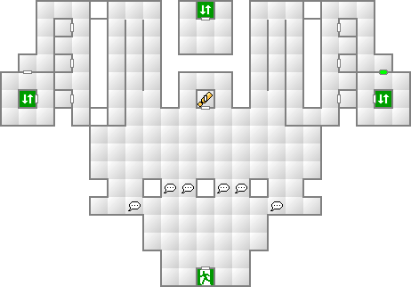

- クリアの手順
-
クリアの手順
- 1階東の扉へ進む
- 1階中央の手続きカウンターに入る
- 2階中央南の手続きカウンターに入る（レイ・レイホゥ戦）
- 地下1階中央の手続きカウンターに入る
- 3階の管制室へ（ウィンペ戦）
このような流れになる。
- 後に備えて
-
後に備えて
このビジョンクエスト終了時のCOMP内の仲魔は全て、レベル差関係無しに主人公に引き継がれるので、ここで出現する悪魔を出来れば仲魔にしておこう。
オススメはタル・カジャ所持の妖鳥コカクチョウと、マハ・ラギ所持の妖精ジャックランタン。運良く地霊ティングカットに遭遇できたならこいつでもいい。全体魅了のベイバロンの気は非常に強力だ。
- ボス：人間レイ・レイホゥ
-
ボス：人間レイ・レイホゥ
能力 LV39 HP????? MP????? 力09 知07 魔10 耐08 速13 運09 特技 マハ・ラギオン メギド ハマオン ディアラハン 火炎 氷結 電撃 衝撃 破魔 呪殺 万能 精神 神経 魔力 打撃 斬撃 技 銃撃 100 100 100 100 無効 無効 100 無効 無効 無効 100 100 100 100 2階の手続きカウンターに入るとボス戦となる。この戦闘は5ターンで終了するため、始終ガードしているだけでよいが、神樹オシラサマだけは戦闘前にCOMPに戻しておくこと。そうでないと1ターン目のマハ・ラギオンで即死するだろう。
- ボス：電霊ウインペ
-
ボス：電霊ウインペ
能力 LV18 HP3159 MP224 力07 知05 魔09 耐06 速07 運04 特技 ディアラマ デ・カジャ 悪魔の産声 生体MAG抜き 回転斬り 火炎 氷結 電撃 衝撃 破魔 呪殺 万能 精神 神経 魔力 打撃 斬撃 技 銃撃 100 100 100 100 無効 無効 100 反100 無効 無効 100 100 100 無効 3階の管制室での戦闘となる。生体MAG抜きを使用してくるので、石化を回復するために神樹オシラサマは常に召還しておくこと。あとは妖鬼トケビのラク・ンダ、もしいるなら妖鳥コカクチョウのタル・カジャを使用すれば、苦戦することなく勝てるだろう。
- マップ
-
マップ
1F

緑のゲートは、中央の手続きカウンターに入ることで開く。
2F
緑のゲートは、中央の手続きカウンターに入ることで開く。
B1F

3F
緑のゲートは、B1Fの手続きカウンターに入ることで開く。